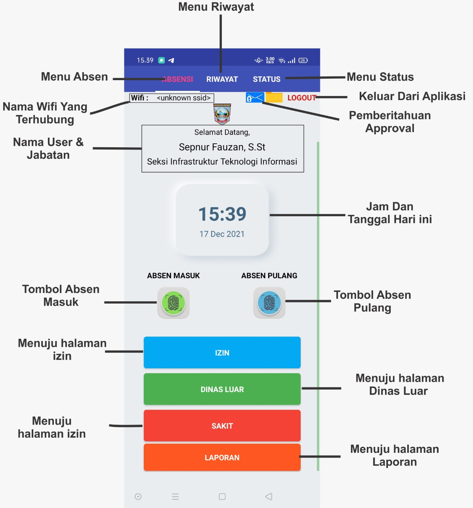
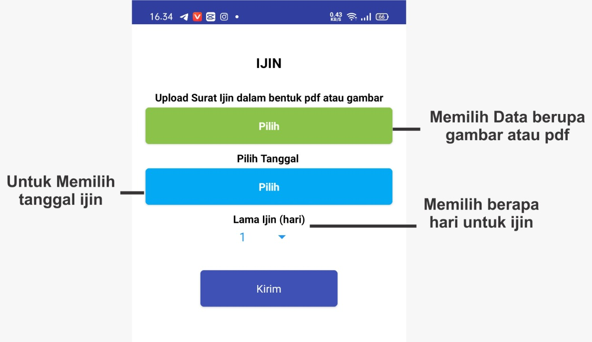
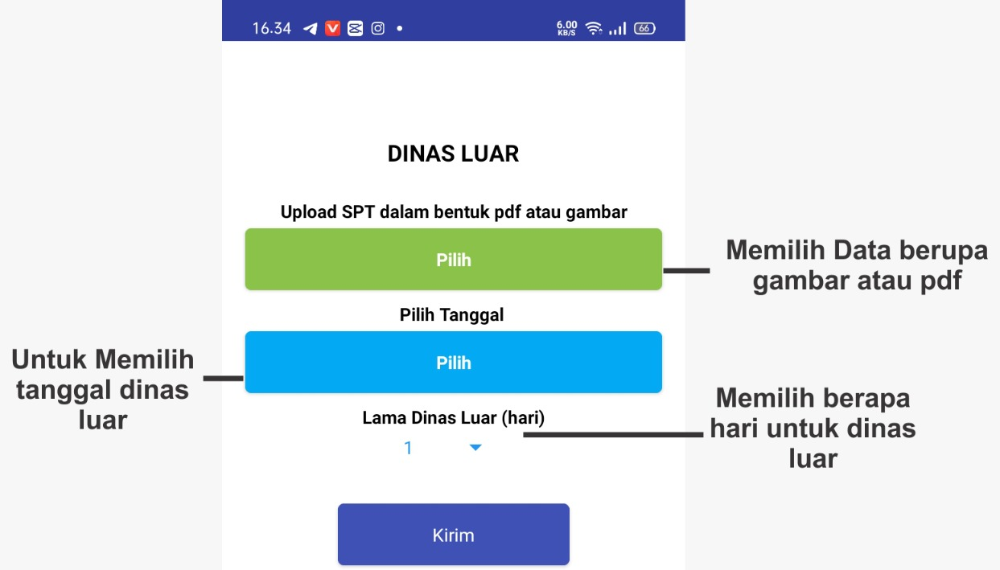
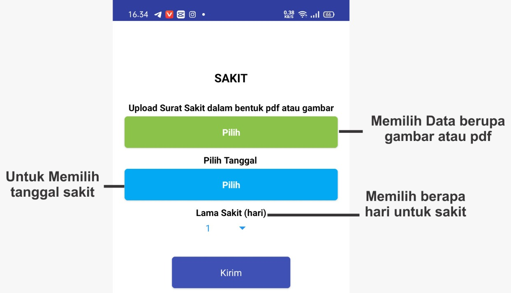

Absensi
Dasboard
Wajib dipatuhi, saat melakukan absensi kehadiran
- Pengguna harus terhubung pada Wifi Yang didaftarkan oleh admin instansi
- GPS Harus dinyalakan

Wifi
Informasi Wifi Yang sedang terkoneksi pada perangkat Anda.
Profile User
Informasi Nama dan Jabatan pengguna sebagai Pegawai sesuai Struktur Organisasi
Tanggal dan Waktu
Tanggal dan waktu saat anda melakukan absensi, selelu menyesuaikan berdasarkan waktu server.
Tombol
Absen Masuk dan Pulang
Tombol Absen Masuk dan Absen Pulang
Pastikan fitur WIFI dan GPS pada perangkat Anda dalam keadaan Aktif sebelum menekan tombol absen. Wifi yang sedang terkoneksi adalah wifi yang telah ditentukan oleh masing-masing admin OPD/Instansi.
- WIFI
Wajib Aktif(Sesuai pengaturan Administrator OPD/Instasi) - GPS
Wajib Aktif
Jika Wifi belum tampil pada aplikasi
Keluar dari aplikasi lalu buka kembali aplikasi Absen Online, sampai Wifi yang sudah ditentukan oleh Administrator Instansi tampil pada status Wifi.

Izin

Dinas Luar

Sakit

Laporan
Laporan harian
Pada fitur ini Pegawai dapat membuat laporan harian pada halaman ini. Untuk panduan lebih lanjut silahkan pelajari Petujnujuk Mengisi Laporan Harian
Logout
Mengakhiri sesi Anda pada Absensi Online, terletak pada pojok kanan atas aplikasi.
Last update:
February 6, 2022 14:59:47
Dibuat: February 6, 2022 14:26:30
Dibuat: February 6, 2022 14:26:30